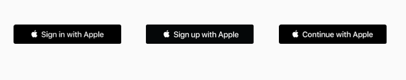

在你的 app 或者网站上展示一个「Sign in with Apple」按钮意味着人们可以只通过他们已经拥有的 Apple ID 进行登录或注册，跳过填写个人信息、确认电子邮箱和选择密码的部分。Sign in with Apple 通过给用户一个一致的、他们可以信任的登录体验提供了一个全新的、更加隐私的方式以简化和加快登录 app 和网站的过程，也方便了用户不需要记住多个账户和密码。在你需要请求用户的名字和电子邮箱的地方，用户可以选择对他们的真实电子邮箱进行保密，而提供一个独一无二的、随机的、可收发邮件的电子邮箱地址。
Sign in with Apple

Sign in with Apple 让人们通过 Face ID 或者 Touch ID 完成授权变得简单，并且内建了两步验证以增加安全层级。Apple 不会通过 Sign in with Apple 的活动在 app 中收集用户的个性化资料和他们的具体活动。
Sign in with Apple 提供了反欺骗的特性，它可以通过机器学习和其他信息提供给开发者一个新用户是真实人类还是需要进一步观察的标志。
目录
- 目录
- What's New
- 设计帐户注册和登录流程
- Sign in with Apple 按钮
- 实现 Sign in with Apple
- Sign in with Apple 新的审核规范
- 参考链接
What's New
- 2020-03：
- 进一步明确了 Sign in with Apple 按钮在 iOS、macOS、tvOS、watchOS 和 Web 端不同平台上的样式区别；
- 增加了对创建一个自定义的 Sign in with Apple 按钮（左对齐 logo 样式、只有 logo 样式）的描述。
设计帐户注册和登录流程
- 让用户登录只为了交互有价值的信息：例如，人们可能需要创建一个账户来让 app 可以提供个性化的体验、在 app 中访问额外的功能或者同步数据，如果你的 app 不需要基于账户的功能，那就不需要让用户登录。
- 在你的所有 app 和网站中考虑使用 Sign in with Apple：为了一个一致性的登录体验，推荐你在你 app 覆盖的所有苹果平台和网站上使用 Sign in with Apple。
- 登录的请求越往后越好：当用户还没做什么有用的事情就被强制登录时，人们可能会放弃使用 app。在向用户发出请求并让用户提供信息前给用户一个熟悉你 app 的机会。例如，一个流媒体播放 app 在需要登录播放内容前可以先让用户看看 app 提供了什么内容。
- 在任何可能的时候，直到用户要做出购买决定时再让用户创建账户：如果你的服务支持访客结算系统，在交易完成之后处理好结算过程，并可以给用户一个快速创建账户的机会。
- 向用户解释清楚登录的好处以及如何注册你的服务：如果你的 app 需要登录账户，那就在登录界面上给用户展示一个清晰友好的说明，描述清楚为什么需要登录以及登录的好处。还有，记住并不是每一个使用你 app 的人在一开始就有一个账户。
- 注册账户时只收集必要的信息：如果只是为了创建一个独一无二的用户标识符，那就不需要收集用户的名字和电子邮箱信息。
Sign in with Apple 按钮
Apple 提供了几种「Sign in with Apple」按钮，你可以使用它们以让用户注册或者登录账户。如果有需要，你可以创建一个自定义的按钮以提供 Sign in with Apple 功能。
- 突出展示「Sign in with Apple」按钮：确保 Sign in with Apple 按钮不比其他的登录按钮小，避免出现滚动才能看到按钮的情况。
使用系统提供的按钮
当你使用系统提供的 API 创建一个 Sign in with Apple 按钮时，你可以获得下面这些好处：
- 一个确保使用了 Apple 提供的标题、字体、颜色、样式的按钮；
- 当你改变按钮样式时，按钮的内容可以保证保持一个理想的比例；
- 自动翻译按钮上的文字为设备指定的语言；
- 支持配置按钮的圆角半径以匹配你的 UI 样式（在 iOS、macOS、Web 不同环境下）；
- 一个系统提供的替代文本标签，可以让「旁白/VoiceOver」描述出按钮。
系统提供了按钮标题的几种变种样式。根据你的内容运行的平台，选择适合你的登录体验的术语样式，并在你的所有界面中一致地使用。
下面的几种按钮标题在 iOS、macOS、tvOS 中都可用，「Sign in with Apple」和「Continue with Apple」在 Web 端中可用：

对于 watchOS，系统提供了一种按钮标题： Sign in
取决于不同的平台，系统最多提供三种 Sign in with Apple 按钮的外观样式：白色（White）、带描边的白色（White with Outline Rule）、黑色（Black）。根据你要展示按钮处的 UI 背景选择最适合的外观。
白色
白色外观样式在所有平台和 Web 端可用。在可以提供足够对比度的深色或者彩色背景上使用白色外观样式。
带描边的白色
带描边的白色外观样式在 iOS、macOS 和 Web 端可用。在白色或者不能与白色按钮填充形成足够对比度的浅色背景上使用带描边的白色外观样式。不要在深色或者太饱和颜色的背景上使用，因为黑色描边会让视觉上变杂乱，可以使用白色外观样式与深色背景形成对比。
黑色
黑色外观样式在所有平台和 Web 端上可用。在白色或者可以提供足够对比度的浅色背景上使用黑色外观样式。不要在黑色或者深色的背景上使用。
与其他平台上的黑色 Sign in with Apple 按钮不同的是，watchOS 平台上的按钮使用的填充颜色并不是完全的黑色。为了与 Apple Watch 的纯黑色背景形成对比，watchOS 的按钮使用了系统定义的深灰色外观样式。
按钮尺寸和位置
- 调整圆角半径以与 app 中的其他登录按钮样式相匹配：默认情况下，Sign in with Apple 有一个圆角半径。在 iOS、macOS 和 Web 端，你可通过改变这个半径值让按钮变成圆角矩形或者药丸形状。

- 在 iOS、macOS 和 Web 端，保证最小按钮尺寸和按钮周围的边距：取决于不同的地区，按钮的标题长度可能会发生变化。使用下面推荐的指导值。
创建一个自定义的 Sign in with Apple 按钮
如果你的布局需要，你可以为 iOS、macOS 或者 Web 端创建一个自定义的 Sign in with Apple 按钮。例如，如果你支持多种登录方法，你可能需要展示一些使用了左对齐 logo 的按钮或者只展示一个 logo 的按钮。
Apple 的设计资源提供了可下载的 Apple logo 资源文件，你可以使用它们创建自定义的左对齐 logo 的 Sign in with Apple 按钮或者只展示一个 logo 的 Sign in with Apple 按钮。Logo 文件包含 PNG、SVG 和 PDF 格式，对于两种类型的按钮资源文件都提供了两种外观样式。下面是黑色和白色的只展示一个 logo 的按钮资源文件示例，为了保持可见，每一个都添加了一个背景：
所以可下载的 logo 文件都包括了为了在按钮容易放置 logo 的边界间距：
- 左对齐 logo 资源文件包括了竖直边界间距，以确保 logo 和 按钮之间有正确的比例；水平边界间距，以在 logo 和按钮的左边界以及标题间提供一个最小边界。
- 只有 logo 的资源文件包括了竖直和水平边界间距，以确保 logo 和按钮之间有正确的比例。
只使用从 Apple 设计资源下载的 logo 资源文件。遵循下面的指导准则创建和放置可下载的 logo 资源文件：
- 不要使用 Apple logo 本身作为一个按钮；
- logo 资源文件的高度要和按钮的高度相匹配；
- 不要切割 logo 资源文件；
- 不要增加竖直边界间距；
- 不要在 logo 资源文件中使用自定义的颜色。
左对齐 logo 样式的按钮
- 基于按钮的高度选择 logo 资源文件的格式：因为 SVG 和 PDF 是矢量图形格式，你可以使用这些文件创建任何高度的按钮。只在按钮高度是 44pt（iOS 中默认和推荐的按钮高度） 时使用 PNG 格式。左对齐 logo 资源文件包含小、中、大不同尺寸，你可以根据你展示的所有注册按钮匹配不同的 logo 尺寸。
- 对于按钮标题（ Sign in with Apple、Sign up with Apple、Continue with Apple）使用系统字体：为了看上去正确无误，你自定义按钮的标题和按钮高度应该和系统提供的按钮使用相同的比例。特别的，标题的字体尺寸应该是按钮高度的 43%，换句话说，按钮的高度应该是标题字体尺寸的 233%，取最接近的整数。下面是两个例子：
- 保持按钮标题的大小写样式不变：按钮标题的所有样式第一个单词（即 Sign 和 Continue）和 Apple 要大写，其他字母要小写。不要改变这种样式，如在标题中把每一个字母都大写。
- 让标题和 logo 在按钮内保持垂直对齐：为了做到这样，让标题和按钮的中间保持垂直对齐，然后添加 logo 图片，确保它的高度与按钮高度相匹配。因为 logo 图片包括顶部和底部的边界间距，在按钮中垂直对齐标题可确保标题、logo 和按钮保持正确对齐。
- 如有必要，插入 logo：如果你需要让 Apple logo 与其他 logo 水平对齐，你可以在 logo 的左边插入。
- 在按钮标题和按钮的右侧边界间保持一个最小的边界值：边界值最小应该为按钮宽度的 8%。
- 保持最小按钮尺寸和按钮四周的边界值：取决于不同的地区，按钮的标题长度可能会发生变化。使用下面推荐的指导值。
只有 logo 样式的按钮
- 基于按钮的尺寸选择 logo 资源文件的格式：像左对齐 logo 样式的按钮的资源文件一样，只有 logo 样式的按钮的可下载的资源文件也有 SVG、PDF、PNG 三种格式。对于任何尺寸的按钮，使用基于矢量的 SVG 和 PDF 格式；对于 44pt × 44pt 大小的按钮，使用 PNG 格式。
- 不要在只有 logo 的图片中增加水平边界间距：只要 logo 样式的 Sign in with Apple 按钮总是 1:1 比例，资源文件已经在四周包括了正确的边界间距。
- 使用一个遮罩去改变默认的只有 logo 的图片的矩形形状：例如，你可能想要使用一个圆形或者圆角矩形去展示所有的只有 logo 样式的登录按钮。不要为了减少内建的边界间距切割 Apple 提供的资源文件或者只使用 logo 本身，避免包括额外的边界间距。
- 在按钮四周保持一个最小边界值：边界值最小应该为按钮高度的 1/10。
实现 Sign in with Apple
纵览
当用户点击 Sign in with Apple 按钮后，用户会看到一个根据你 app 要求提供的信息而填好了信息的表单显示在屏幕上，像是名字和电子邮箱。用户可以在提供原始电子邮箱或者一个新的由 Apple 提供的邮箱之间做出选择。当用户点击继续按钮后，就完成了登录。你的 app 也会获得一个独一无二、固定 ID、用户的名字以及一个可以让用户收到邮件的电子邮件地址，不再需要用户做收取验证邮件、点击验证链接这样的事。

当用户在一台新的设备上登录时，一个轻轻的点击就可以登录之前的用户并开始使用你的 app。
Sign in with Apple 为你的 app 提供了一套流线化的账户设置体验，不需要填写复杂的表格，只需要轻轻一点。用户从 App Store 使用他的 Apple ID 下载了 app，在 app 中也顺其自然地通过 Sign in with Apple 完成登录。开发者也获得了一个已验证并且可以让用户收到邮件的邮箱，即使用户隐藏了自己的真实邮箱，提供的新的邮箱收取的邮件也可以通过 Apple 的转发服务转到用户的真实邮箱，同样用户也可以使用这个新的邮箱进行邮件回复。

Apple 也可以在使用 Sign in with Apple 登录时，通过机器学习和其他获取的信息告诉开发者这个用户是真实的还是未知的。如果是真实的，你就不需要再判断，尽管给这个用户良好的使用体验，如果是未知的，那可能是一个真人用户，也可能是一个机器人。

Sign in with Apple 也是跨平台的，不仅可以在所有苹果平台上使用，也可以通过 JS API 在网站、Windows、Android 上使用。

让 Sign in with Apple 与你的 app 结合
分成下图的四个部分：按钮、授权、鉴权、处理变动。先展示 Sign in with Apple 按钮，接着配置和执行授权的请求，在用户看到 Sign in with Apple 按钮并通过 Face ID/Touch ID 完成确认后，授权的结果会返回给 app。这时你需要与 Apple ID 服务器确认结果并在你的 app 中创建一个新用户。最后，凭据状态可能会发生变化，你的 app 需要处理处理好这些变化状态。

Button 按钮
只需要几行代码，你就可以把 AuthorizationAppleIDButton 添加到你的 app 中。具体代码如下：
// Add “Sign in with Apple” button to your login view
func setUpProviderLoginView() {
let button = ASAuthorizationAppleIDButton()
button.addTarget(self, action: #selector(handleAuthorizationAppleIDButtonPress),for: .touchUpInside)
self.loginProviderStackView.addArrangedSubview(button)
}
Authorization 授权
利用几行代码，你就可以初始化一个 Apple ID 授权请求。具体的代码如下：
// Configure request, setup delegates and perform authorization request
@objc func handleAuthorizationButtonPress() {
let request = ASAuthorizationAppleIDProvider().createRequest()
request.requestedScopes = [.fullName, .email]
let controller = ASAuthorizationController(authorizationRequests: [request])
controller.delegate = self
controller.presentationContextProvider = self
controller.performRequests()
}
Verification 鉴权
在授权后，app 如果鉴权成功会从凭据中获得一系列信息，如果用户中断了过程或者发生了错误需要有错误处理的逻辑。具体的代码如下：
func authorizationController(controller _: ASAuthorizationController, didCompleteWithAuthorization authorization: ASAuthorization) {
if let credential = authorization.credential as? ASAuthorizationAppleIDCredential {
let userIdentifier = credential.user
let identityToken = credential.identityToken
let authCode = credential.authorizationCode
let realUserStatus = credential.realUserStatus
// Create account in your system
}
}
func authorizationController(_: ASAuthorizationController, didCompleteWithError error: Error) {
// Handle error
}
对于凭据中的信息，userID 是一个独一无二、稳定的、团队范围内的用户识别符，你可以在不同的平台中使用它获取用户信息，它是与你的开发者账户绑定的。鉴权数据包括身份 token 和授权 code，token 的生命周期很短，可以与 Apple ID 服务器交换新的 token。可选的，系统还会返回你请求的账户信息，比如名字和电子邮箱。最后是一个之前提到的真实用户指示标志。
Handling Changes 处理变动
你的用户可能会在你的 app 中停止使用 Apple ID 登录，可能会在设备中登出。授权服务框架提供了一个快速 API 供开发者获取相关状态。具体的代码如下：
let provider = ASAuthorizationAppleIDProvider()
provider.getCredentialState(forUserID: "currentUserIdentifier") { (credentialState, error) in
switch(credentialState){
case .authorized:
// Apple ID Credential is valid
case .revoked:
// Apple ID Credential revoked, handle unlink
case .notFound:
// Credential not found, show login UI
default: break
}
}
NotificationCenter 也可以发出通知，告诉 app 用户的凭据状态已经失效。当失效时，在设备上退出登录，进一步可以引导用户重新登录。具体代码如下：
// Register for revocation notification
let center = NotificationCenter.default
let name = NSNotification.Name.ASAuthorizationAppleIDProviderCredentialRevoked
let observer = center.addObserver(forName: name, object: nil, queue: nil) { (Notification) in
// Sign the user out, optionally guide them to sign in again
}
用户使用 Sign in with Apple 在你的 app 中注册了用户，他可能还会在其他设备上使用你的 app 或者需要重新登录。当第一次进入 app 时，系统会告诉用户曾经使用 Apple ID 注册了用户，经过 Face ID 检查后就可以完成登录。

同时，通过相同的 API，iCloud 钥匙串也可以实现此功能。你需要同时支持这两种登录请求。
当用户已存在时，具体的代码如下：
///Prompts the user if an existing iCloud Keychain credential or Apple ID credential exists.
func performExistingAccountSetupFlows() {
// Prepare requests for both Apple ID and password providers.
let requests = [ASAuthorizationAppleIDProvider().createRequest(),
ASAuthorizationPasswordProvider().createRequest()]
// Create an authorization controller with the given requests.
let authorizationController = ASAuthorizationController(authorizationRequests: requests)
authorizationController.delegate = self
authorizationController.presentationContextProvider = self
authorizationController.performRequests()
}
判断是通过 Apple ID 凭据登录还是 iCloud 钥匙串登录的具体代码如下：
func authorizationController(controller _: ASAuthorizationController, didCompleteWithAuthorization authorization: ASAuthorization) {
switch authorization.credential {
case let credential as ASAuthorizationAppleIDCredential:
let userIdentifier = credential.user
// Sign the user in using the Apple ID credential
case let credential as ASPasswordCredential:
// Sign the user in using their existing password credential
default: break
}
}
跨平台
在浏览器中，你也可以通过 JS SDK 实现用户熟悉的登录窗口，通过输入 Apple ID 和密码完成登录。其 API 与原生的相似。

特别的，在 Safari 浏览器上，点击网页上的 Sign in with Apple 按钮会直接定向到一个原生的像 Apple Pay 一样的表单，用户可以通过 Touch ID 授权快速完成登录。
Best Practices

Sign in with Apple 新的审核规范
2019 年 9 月 12 日 Apple 针对 Sign in with Apple 发出通知，更新了 App Store 审核规范，提供了 app 什么时候该使用 Sign in with Apple 的标准。从现在开始，所有的新 app 必须遵守这个规范，对于已经存在的 app 和 app 更新的最后期限是 2020 年 4 月。对于在 web 上和其他平台上使用，Apple 也提供了相应规范。
App Store 审核规范
对于仅使用了第三方登录或者社交登录服务（例如 Facebook 登录、Google 登录、Twitter 登录、LinkedIn 登录、Amazon 登录、微信登录）设置或者授权用户的主要账户的 app，必须也提供「Sign in with Apple」作为一个同等的选项。用户的主要账户是指他们在 app 中建立的用来识别他们自己、登录、访问某些功能和相关服务的账户。
Sign in with Apple 在下面这些情况中不是必须的：
- 你的 app 只使用了你公司自己的账户设置和登录系统；
- 你的 app 是一个要求用户使用已有的教育或企业账户登录的教育、企业、商业 app；
- 你的 app 通过政府或者行业支持的公民身份识别系统或者电子 ID 来授权用户；
- 你的 app 是特定的第三方服务的客户，用户被要求登录他们的电子邮件、社交媒体或其他第三方账户才能访问他们的内容。
网站和其他平台上的使用规范
如果在你的已上架 App Store 的 app 中使用了 Sign in with Apple，我们推荐在任何相关的网站或者其他平台的 app 上通过调用 Apple JS 来提供 Sign in with Apple 功能。
在下面这些情况下，网站或者 app 可能不适合使用 Sign in with Apple：
- 违反任何法律或者是在其他方面不能遵守任何法律要求的；
- 提供下面的服务或交易的：
- 香烟和烟草产品；
- 枪、武器或者弹药；
- 非法药品或者不合法的处方药品；
- 给用户造成安全风险的项目；
- 被用于参加非法活动的项目；
- 色情作品；
- 假冒或失窃商品。
- 主要提供或出售毒品用具或者面向性的用品和服务；
- 宣扬基于种族、年龄、性别、性别认同、族裔、宗教信仰或性取向的仇恨、暴力或排斥；
- 参与任何类型的诈骗；
- 侵犯他人的知识产权、宣传权、隐私权；
- 以虚假或贬损的方式展示 Apple 和它的产品。
除了允许用户自愿地设置一个账户和登录你的 app 或服务，不得通过 Apple API 为了其他目的使用 Sign in with Apple。
参考链接
- Sign in with Apple - Sign in with Apple - Human Interface Guidelines - Apple Developer
- Introducing Sign in with Apple - WWDC 2019 - Videos - Apple Developer
- App Store Review Guidelines - Apple Developer
- Usage Guidelines for Website and Other Platforms - Sign in with Apple - Apple Developer
如果你觉得这篇文章对你有所帮助，欢迎请我喝杯咖啡，感谢你的支持😁